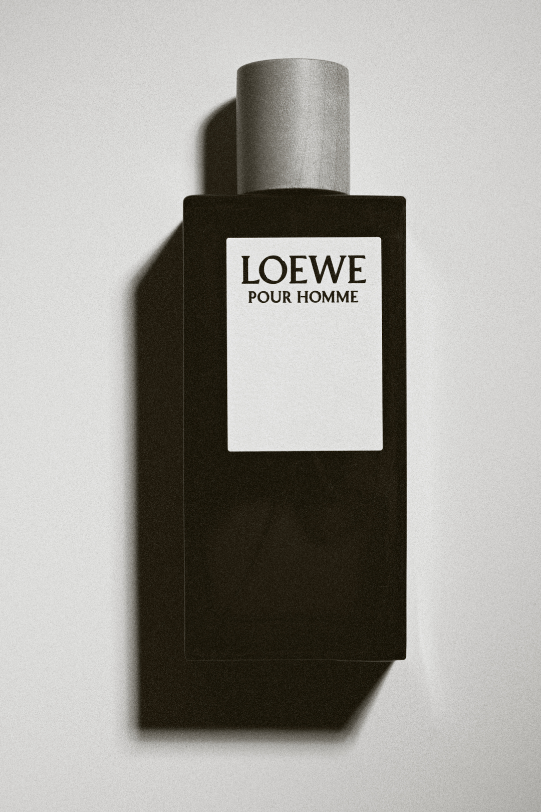
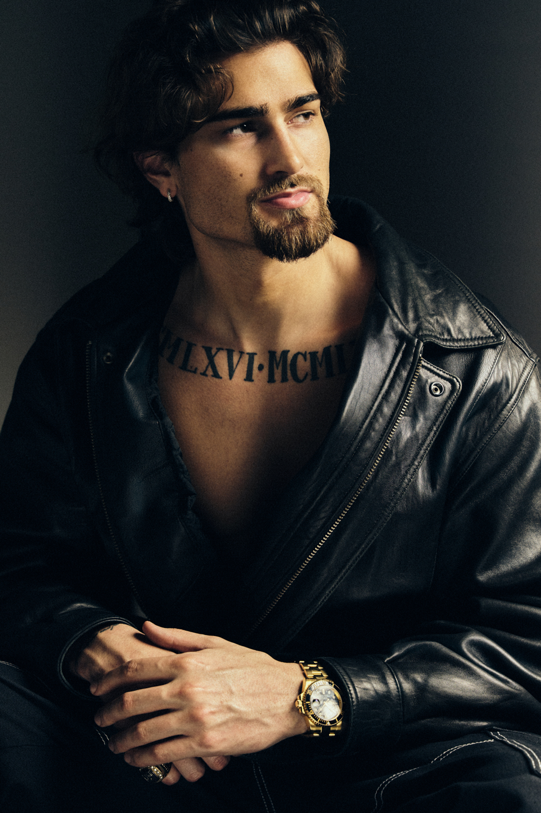

Immerse yourself in the captivating world of still life through my lens, where ordinary objects are transformed into extraordinary
visual narratives. In my still life photography, meticulous attention to detail and a keen sense of composition come together to create images that are both timeless and evocative.
Each photograph is a carefully curated tableau, capturing the beauty in simplicity and the poetry within everyday items. Through the interplay of light and shadow, my work breathes
life into inanimate subjects, inviting viewers to contemplate the stories and emotions that lie beneath the surface. Explore a gallery that transcends the mundane, as my still life
photography transforms the ordinary into a celebration of form, texture, and the enduring allure of the everyday.

Capturing the essence of individuals through my lens, my portrait photography endeavors to tell unique and compelling stories in every frame.
With a keen eye for detail and a passion for highlighting the distinct personality of each subject, I strive to create images that resonate with
authenticity and emotion. Utilizing creative composition and lighting techniques, my work aims to go beyond mere visual representation, delving
into the soul of the individuals I photograph. Whether it's a candid moment or a carefully orchestrated pose, I believe in the power of portraits
to convey a narrative and evoke a genuine connection between the viewer and the subject. Through my portfolio, I invite you to explore a diverse
collection of portraits that celebrate the beauty, diversity, and individuality of each person captured in front of my camera.

Embark on a visual journey through my travel photography, where each image encapsulates the spirit of exploration and discovery. From the bustling streets
of vibrant cities to the serene landscapes of remote destinations, my lens captures the essence of diverse cultures and breathtaking scenery. With an
unwavering passion for documenting the beauty of our world, my travel photography seeks to transport viewers to different corners of the globe. Through a
harmonious blend of colors, compositions, and storytelling, each photograph invites you to experience the rich tapestry of cultures and landscapes that
have left an indelible mark on my adventurous soul. Join me in reliving these captivating moments, and let the images inspire your own wanderlust and
appreciation for the wonders that await beyond familiar horizons.